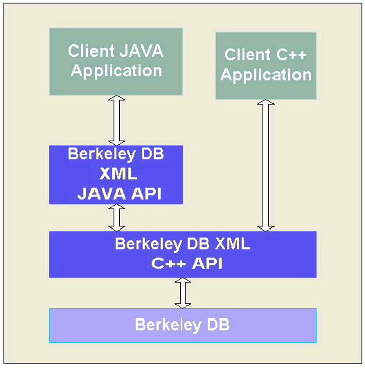

- Berkeley DB XML Reference Guide:
- Berkeley DB XML


|
|
Architecture
Berkeley DB XML is implemented as C++ library on top of Berkeley DB. BDB XML is distributed as a shared library that is embedded into the client application. The BDB XML library exposes API's that enable C++ and Java applications to interact with the XML data containers. Figure 1 illustrates the Berkeley DB XML system architecture.

BDB XML uses Berkeley DB for data storage and transaction management. Client applications can also store data directly to a Berkeley DB database. Although BDB XML hides much of the internal use of Berkeley DB, some understanding of the underlying Berkeley DB API is required, as some BDB XML API methods accept Berkeley DB object handles as parameters. In particular, transactional applications need to fully understand the Berkeley DB database management interfaces for operations such as backup and restore, archiving, database recovery, etc.
The BDB XML library comprises several main components: document storage, XML indexing and index management, query optimization, and query execution.
Document StorageWithin Berkeley DB XML, documents are stored in containers. Containers are named and are files that include a number of Berkeley DB databases for information such as documents, indices and index statistics, data dictionary, and other system metadata. A container is the scope for indices, document names, container type, and other container-specific information. A client application can operate on multiple containers concurrently, and controls the placement of documents within containers. The client application can also store data to Berkeley DB databases. A client application can perform the following actions against a container:
| Action | ||
|---|---|---|
| Create or remove a container. | ||
| Add or drop an index in a container. | ||
| Open a container for use within the application. | ||
| Insert or delete a document in a container. | ||
| Retrieve a document from a container. | ||
| Update an existing document | entirely or in part. | |
| Set | modify | or remove document metadata. |
| Query a container using an XQuery or XPath expression. | ||
| Close a container. | ||
| Rename documents and containers. | ||
| Dump a container to a text file. | ||
| Load a container from a text file that was generated by a container dump. | ||
| Verify that a container is internally consistent. |
For a complete description and examples of how to use the BDB XML API to perform these tasks, see either the C++ or Java version of the Berkeley DB XML Getting Started Guide.
|
|
Copyright (c) 1996-2009 Oracle. All rights reserved.